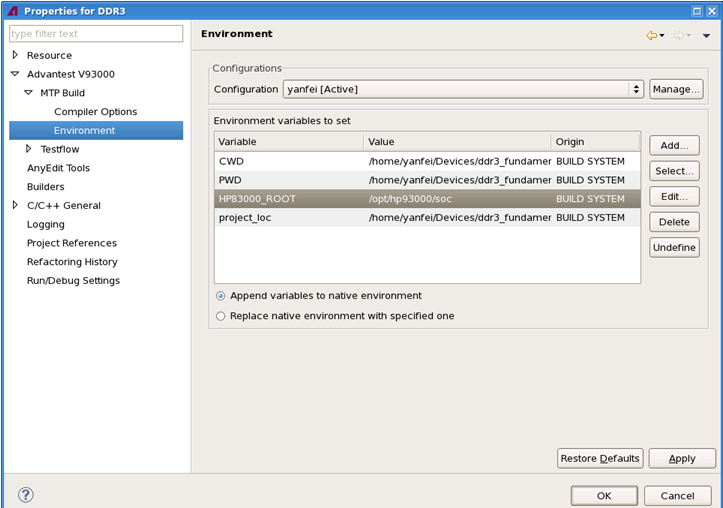

The Environment page
The Environment page lets you set up environment variables for specific build configurations.
The following picture shows the Environment page:

The items on this page are:
- Configuration: Lets you select a build configuration.
If you have not created the build configuration, create it with Manage... on this page or with Manage... on the MTP Build page.
- Add...: Lets you add environment variables and their values for the build configuration specified in the Configuration field.
- Select...: Lets you add an existing system-defined environment variable for the build configuration specified in the Configuration field.
- Edit...: Lets you modify a selected environment variable on this page.
- Delete: Lets you delete the selected environment variables on this page.
- Undefine: Lets you assign no meaningful values UNDEFINED to the selected environment variables on this page.
- Append variables to native environment: Lets you add a new value to an existing environment variable.
- Replace native environment with specified one: Lets you replace the values of an existing environment variable with a new value.
Functional changes
- Introduced in MTP 3.2.1